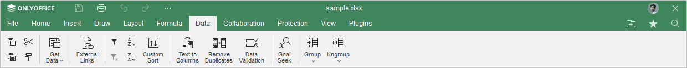
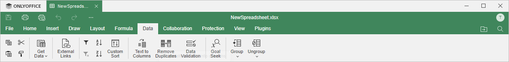

Kartica Data
Kartica Data omogućava upravljanje podacima u Spreadsheet Editor-u.
Odgovarajući prozor Online Spreadsheet Editor-a:

Odgovarajući prozor Desktop Spreadsheet Editor-a:

Pomoću ove kartice možete:
- sortirati i filtrirati podatke,
- konvertovati tekst u kolone,
- ukloniti duplikate iz opsega podataka,
- grupisati i razgrupisati podatke,
- podesiti parametre validacije podataka,
- pronaći odgovarajući ulaz za željenu vrednost,
- dobiti podatke iz TXT/CSV datoteke,
- pregledati druge datoteke sa kojima je tabela povezana putem dugmeta External Links.